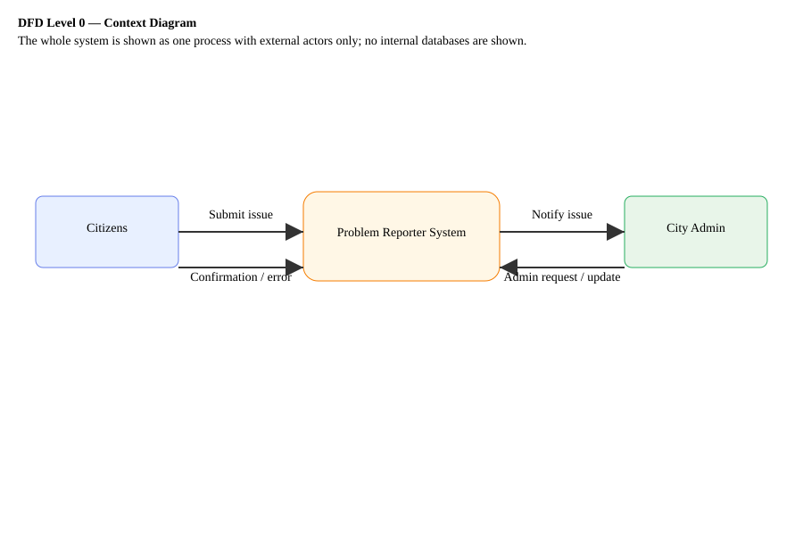
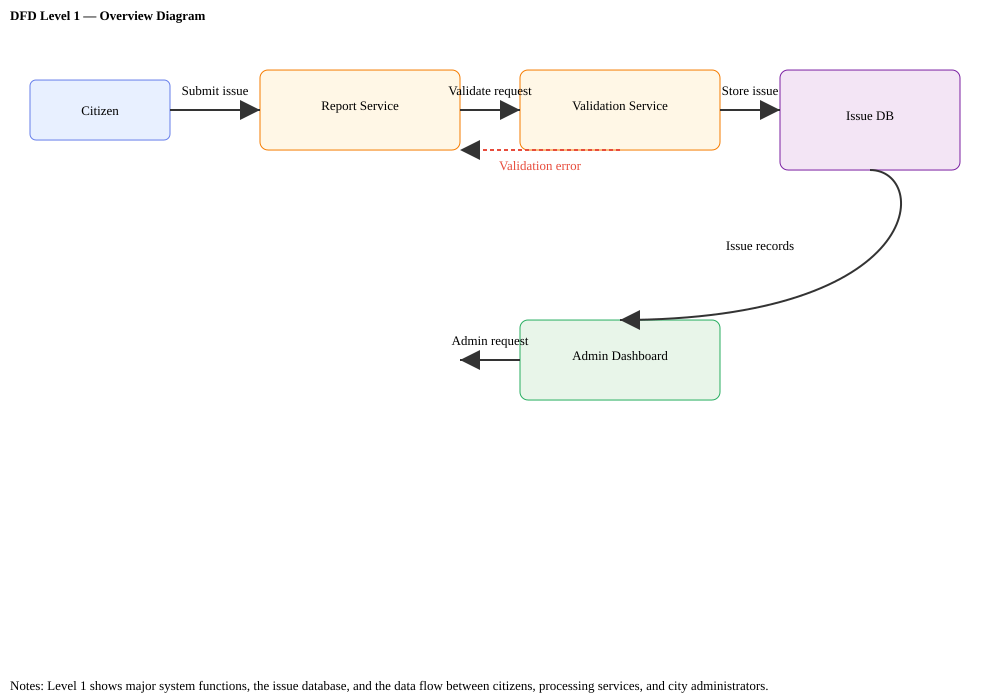
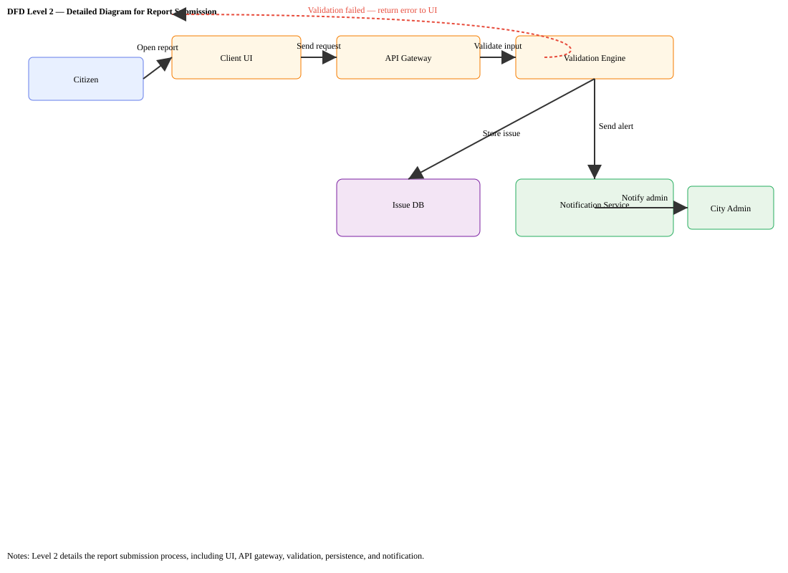
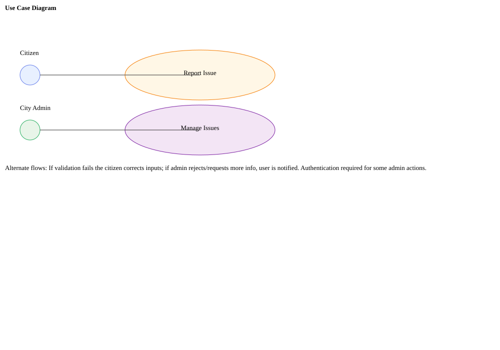

Click a diagram to open it full-size in the browser.




To view: open this file in your browser: docs/diagrams/index.html
Notes: All SVGs have a white background for readability. Open the index in a browser (double-click the file or use Live Server) and click any diagram to open it full-size. If you need PNGs, I can export them.